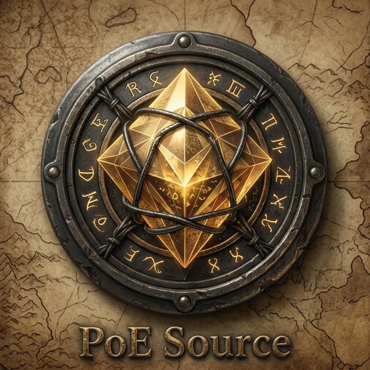

› Gaming · D/04 Play
Another parallel highway.
My love of gaming consumes a lot of who I am.

POE Source
I've had this idea since POE2 came out.
I never had the tools to build something of this caliber. Now I do. Build guides, farming strategies and tools for Path of Exile 2, and I'm aiming to finish it for the 1.0 launch.
Path of Exile 2 · 1.0 launch, December 11
--days
--hours
--min
--sec
› Player one · how I got here
- 1984

The arcades
My dad's arcades were my first playground. Galaga taught me patterns. Donkey Kong taught me patience.
- Next
Nintendo
The arcade came home.
- Then
PlayStation
The first PlayStation, and a whole new world.
- Now
PC
Where I play now, and where POE Source lives.